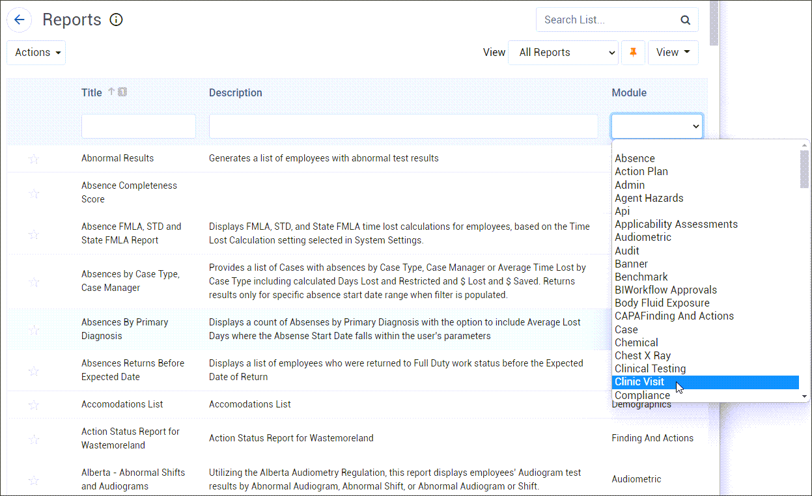

In the Business Intelligence menu, click Reports. All Cority reports are listed in alphabetical order, along with the module they are used by.
To quickly move to a particular report in the list, enter one or more letters followed by an asterisk in the Title field and press Enter.
To see just the reports for a particular module, choose the module from the list.

Click the star  to mark frequently-used reports as Favorites. You can then quickly access them via the Favorites view in the Reports list, or the My Favorite Reports gadget on the Advanced Dashboard (see Using the Advanced Dashboard).
to mark frequently-used reports as Favorites. You can then quickly access them via the Favorites view in the Reports list, or the My Favorite Reports gadget on the Advanced Dashboard (see Using the Advanced Dashboard).
Click the name of the report you want to view. A form appears for you to use to set the parameters for the selected report.
Define the report parameters. The available fields depend on the report selected. For more information, see Filtering Records.
If a report has an Employee or User criterion, you can set it to “Is Me” to see only the records associated with you.
To view data for a supervisor and employees who report to that supervisor, select the Multiple Job Position Supervisor criterion and select the supervisor.
The report parameters may include an option to choose Print Preview or Print output. If you choose Print and the report is a type that generates multiple reports (e.g. Medical Records), a zip file will be created upon output.
If you choose a tree field, you can choose a node from either the current tree or a historical tree (select the date).
To save your parameters for future use, click Save As and enter a name for the query. If you want the query to be available to other users, select the Standard Query checkbox (this checkbox is only available if you have been granted permission).
To use a saved query, select it from the Queries drop-down list. If you make changes to a query that you originally created, click Save. To return to the default standard query, click New.
To set a query as your default, select it in the list and click the push-pin. Saved queries can be scheduled for recurring generation; see Scheduling Reports.
If you delete a standard query, it is deleted for all users.
Click the appropriate button according to the output you want: